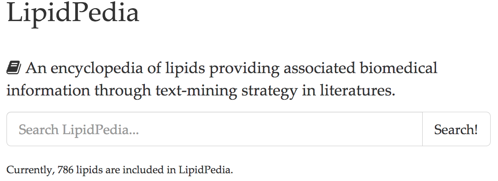

Services
CypRules web
CypRules Server predicts the metabolizing Cytochromes P450 (CYPs) inhibition, including CYP1A2, CYP2C19, CYP2C9, CYP2D6 and CYP3A4. Link >>

BatchNormalizer web
A web-based service for LC/TOF-MS-based metabolomics data normalization to adjust batch and injection order effects and statistical analysis. Link >>


Lipidpedia web
An encyclopedia of lipids providing associated biomedical information through text-mining strategy in literatures. Link >>
3Omics web
3Omics is a one-click web tool for visualizing and rapidly integrating multiple inter- or intra-transcriptomic, proteomic, and metabolomic human data. Link >>